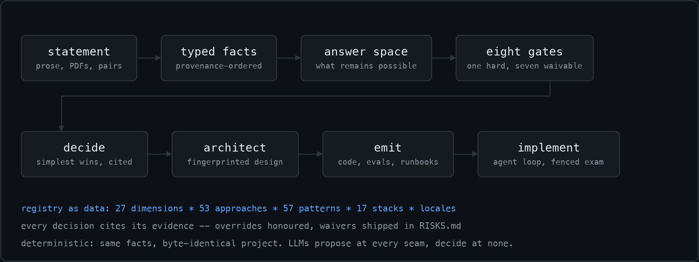

fde-framework
An open-source framework for Forward Deployed Engineers — from a client problem statement to a runnable, deployable AI project, with every decision traced to a fact.
View on GitHub Real run, refusals included Worked example ★ Star Local models PyPI Releases
$ pip install fde-framework $ fde start acme --statement "Extract fields from supplier invoices." $ fde build acme --out project
Watch it work
Captured verbatim from a v0.1.5 session; examples 1–3 re-verified byte-identical on v0.1.8 — trims are marked with …. The worked example in the repo reproduces its full transcript exactly.
1 · A paragraph becomes typed facts — and the next questions
$ fde start acme --statement "Extract fields from 500,000 scanned supplier invoices; runs on-prem; data cannot leave; 10,000 verified; a person is waiting." started engagements/acme … Here is what I took from that: - What does the system produce: structured - How many items in total: 500,000 - What arrives, and in what form: scanned documents - Where does this run: on prem - Can client data leave their environment: cannot leave - How many are verified or labelled: 10,000 - Is a person waiting for the result: yes Correct anything wrong before we go further. worth asking next (fde ask acme --role <who>): - What accelerator does the machine this runs on have? [admin] - Who may use this -- one operating team, distinct roles with different permissions, or anyone internal? [admin/sponsor] - What availability does this need -- always on, business hours, or best effort? [sponsor/admin]
Every fact carries the span of the sentence that stated it, and provenance decides conflicts — never arrival order.
2 · The build refuses until the engagement is real
$ fde build acme --out project [hard] data_access: Credentials have not been shown to work against real data. -> Get a connection that returns real rows, even a handful, then record it: `fde data-access <eng> --note "what returned rows"`. Promised access is not access. … three more gates follow, each naming its remedy and its clearing command … refused: gates above are unsatisfied. Soft gates take `fde waive <gate> --reason`; data access has no workaround, only credentials that return real rows.
Exit code 1, so CI can gate on it. Waived gates ship in the delivered project's RISKS.md, with reasons.
3 · Seat economics, before adoption sends the bill
$ fde cost --price-per-seat 25 --workflows-per-day 8 unit economics at $25.00/seat, 8 workflows/day, 5 step(s) -- token pricing as of 2026-08: $0.0225/workflow -> $3.96/seat-month in model spend margin: $21.04/seat lever: route the measurable share to rules first (cascade at 50% coverage) -> margin $23.02 lever: cache the shared prefix (70% of tokens at the cached rate) -> margin $23.53 lever: bound the loop at 3 steps (the cap the posture section documents) -> margin $22.62
Every figure is dated in the output, and a negative margin prints UNDERWATER — before new users cost money.
4 · A coding agent finishes the build — against an exam it cannot edit
$ fde implement project --holdout engagements/acme/artifacts/holdout.jsonl round 1: red (6 file(s) changed) round 2: green golden 33 cases 100.0% edge_case 8 cases 100.0% adversarial 3 cases 100.0% holdout: green (cases the implementer never saw)
From the framework's own factory-inspection test engagement. The evals, boundary and decision documents are hashed before every round; an agent that edits them is caught and reverted, and a memorized answer key fails the holdout.
How it fits together

What a Forward Deployed Engineer gets
Discovery that compounds
Prose, PDFs, sample pairs, role-scoped interviews and hardware scans feed one profile. Provenance decides conflicts; disagreement between people is a finding, not an error.
Seven gates before building
Verified data access can never be waived. Every waiver ships in the delivered RISKS.md with its reason and your name.
Decisions with receipts
Simplest applicable approach per component, cited evidence, named rejected alternatives.
A real project out
Approval-gated pipeline, three-layer evals plus recall@K for the retrieval layer alone, a runbook with a diagnosis walk, SLOs carrying the captured baseline. Deploy assets for on-prem, hybrid, customer-VPC or air-gapped — carrying the full install path the service needs, a model-free smoke test, and CI that gates every push with or without a model. A decision read off labelled text ships a fitted classifier that must beat the majority on its own exam; a fine-tuning decision ships its data path — a recorded split, a LoRA recipe, a before/after on the holdout.
Multi-modal by design
A system that takes photos and documents and telemetry — or voice, or video — gets one perception path per modality, each decided by its own rules.
It always names the next move
Every recording command ends with a one-line next:, and fde next answers "where was I?" from everything on record — the gates' remedy pattern, generalized to the whole lifecycle.
An engagement, not a build
The stage — discovery, validation, prototype, pilot, production, adoption, retrospective — is computed off the record, never declared. fde drift reads the deployed service’s journal against the exam and opens an incident that pulls production back to pilot; fde value puts the measured system in the client’s own figures, every line labelled measured, stated, assumed or derived.
LLMs propose, never decide
Reading briefs, mining vocabulary, implementing against the fenced harness, judging output after human calibration. The decision path stays deterministic.
Who it is for
Forward Deployed Engineers, AI consultants and solutions engineers delivering LLM systems into enterprise environments — especially where data residency, air-gapped deployment, unit economics and evaluation ownership decide whether the engagement survives contact with production.
Questions a skeptic asks
Does it need an LLM to run?
No. Discovery, decisions and builds are fully offline — it works on a plane and inside an air gap. Model assistance is opt-in per command, and hosted models are refused wherever the engagement says data may not leave.
What does "deterministic" mean here?
Same facts in, byte-identical project out — rebuilds diff empty, and the architecture carries a fingerprint. If two builds differ, a decision changed, and the documents say which.
Air-gapped, really?
Yes: the registry ships inside the wheel, the eval judge can run on a local model, and the emitted boundary refuses at import if anything sensitive is placed outside.
Has anyone actually run this end to end?
Yes — a complete engagement on 626 real scanned receipts is public, refusals preserved: gates passed on real rows, a holdout that refused an overfit implementation, and a measured plateau that flipped the design from rules to a model. Four runs are public: receipts (the holdout refusing an overfit implementation, and the agent proving the exam wrong), complaints (the first fully green loop, deployed and answering over HTTP), rfc-qa (100% recall@10, then the calibration gate refusing its own judge, exactly as predicted) and banking (an industry use case on 13,083 real support messages across seventy-seven queues: an assist-mode router that abstains and says why, scored on a 3,036-case holdout and the vendor’s own test split, with the scorecard saying which rows are fitness and which are self-consistency). Production-proven it is not, yet — the demos say so themselves, row by row.
Can the coding agent game the exam?
It tried. The evals are hashed and restored if touched, files planted beside them are removed, and a holdout set the delivery never ships catches a memorized answer key — an agent that went green on every golden case with zero real logic was stopped exactly this way.
Is the emitted code production-grade?
That property is pinned, not promised. Four independent fresh-eyes audits of the 0.1.16 output — a principal engineer, a security red team, a maintainer, a client staff engineer — returned the same verdict: essays with disconnected code. 0.1.17 answered structurally, and every class of finding is now a permanent check the framework’s own suite runs on every emission: the payload path composes end to end and refuses garbage at the door, the boundary refuses an endpoint outside it, the ledger survives a restart, the service carries a request id on every answer, every variable is documented, the unit installs from what ships, the code is lint-clean. A second pass with fresh eyes confirmed those gone and found the next layer — a forgeable answer key, a quadratic retrieval scan, a journal that interleaved under load — and 0.1.18 pinned each of those the same way. A third pass found the edge, boundary, ledger and gates holding under attack and one unreconciled number (the index’s memory against the unit’s cap); 0.1.19 made sizing a written decision and every deliverable now ships its own edge tests. A fourth pass named exact sign-off conditions; 0.1.20 met the ones that were the framework’s, and a fifth pass returned the first sign-off — with conditions, which 0.1.21 met. Five passes: criticals 5 → 2 → 1 → 0 → 0. A sixth, widened to the exam, the components and the fine-tuning path, signed off the freeform shape with conditions and refused the decision shape for the generator’s reasons — a constant classifier passing CI, a solver for a text decision, a fine-tuning sketch — and 0.1.22 answered each as a check first. A seventh pass found those checks holding and the shape-specific work stopping short — a mis-specified baseline that recalled the commonest label once in sixteen, a golden gate that was in-sample, a recipe that trained unshuffled on a prompt it never served — and 0.1.23 answered the same way: a multinomial baseline that refuses to serve a constant or an edited exam, an out-of-sample gate on the holdout, probes drawn from unfitted cases, a recipe that trains on the shape it serves. 0.1.24 then ran that recipe for real on a small base model — the adapter learned the house style on unseen cases, the comparison measured it under an independent judge — and fixed the six defects the run exposed. An eighth pass gave the decision shape its first sign-off, with conditions, and refused the fine-tuning path on named ones; 0.1.25 met them — probes on typical cases rather than the shortest inputs, label phrases stripped rather than their words, a merge path that trains every epoch, a comparison that says when a delta is not quotable. 0.1.26 made the claim measurable per build — fde scorecard runs what a deliverable can prove about itself and writes SCORECARD.md with a verdict that is a count of rows — and ran a first industry use case end to end: routing a retail bank’s support intents over 13,083 real queries, where the framework’s own reading of a seventy-seven-way decision, its brief parser, its label rule and one governance template each failed and were fixed before a number was quoted. A ninth pass then showed the card measuring self-consistency, not fitness — a component that memorises the exam files scored full marks — and 0.1.27 gave it fitness rows (the generalisation gap, an external exam, the engagement’s own error-rate bar), gave the router an abstain path and a reason on every answer, and fenced the deliverable’s tests from the coding agent. The hardening itself (structured logs with correlation ids, a real readiness preflight, graceful shutdown, bounded retries) came out of hostile staff-engineer audits — and every finding became a permanent check before it became a fix.
Does it stop at the build?
It did, and an outside reading said so: a strong engineering framework, not yet an operating system for the engagement. 0.1.28 carries the record past the build. fde stage computes where an engagement stands from evidence — gates, pairs, a holdout, a build with its exam, a scorecard whose out-of-sample rows hold, a deployment attested by name, an adoption figure measured in the field, a case — and appends each transition with its evidence. fde drift compares the field’s abstention, decision mix, errors and margins with the exam and the last card, opens an incident on the record past a threshold, and holds the stage at pilot until someone closes it with what was done. fde value writes the business case from the recorded baseline and the holdout row with a Wilson interval on the accuracy, naming the stated and assumed lines before any total. What it still is not — a stakeholder graph, enterprise connectors, a benchmark of engagements — the README says plainly, because those need engagements that have not happened yet.
Why not RAGAS or TruLens?
Deliberately. Those frameworks' headline metrics are judge-scored, and an uncalibrated judge is the failure mode this framework measured first-party: a local judge inflating results by 26 points before the calibration gate refused it. Emitted evals are seeded from the client's own verified examples, stdlib-only (they run inside an air gap and hand over clean), reference-based with discrete verdicts, and no judged number is quoted before the judge beats a human-agreement bar. Teams that want RAGAS dashboards can point them at the same golden pairs — the JSONL is the same shape — but the gate a delivery is graded on stays calibrated or stays silent.
How does it improve?
Per engagement: overrides are honoured and recorded, trigger predictions are calibrated against what actually fired, and anonymised cases enter the corpus only through human review.
Apache-2.0 · Python 3.11+ · 1222 tests green at v0.1.28 · built by Atul Kapoor · LinkedIn · pip install fde-framework